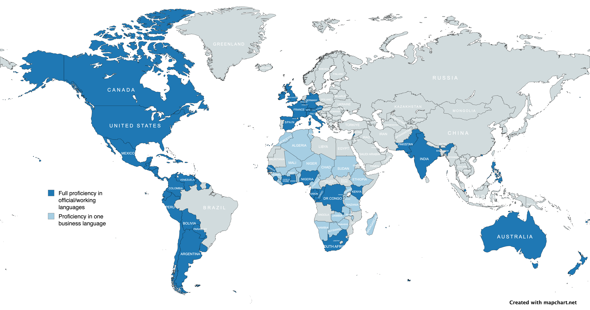
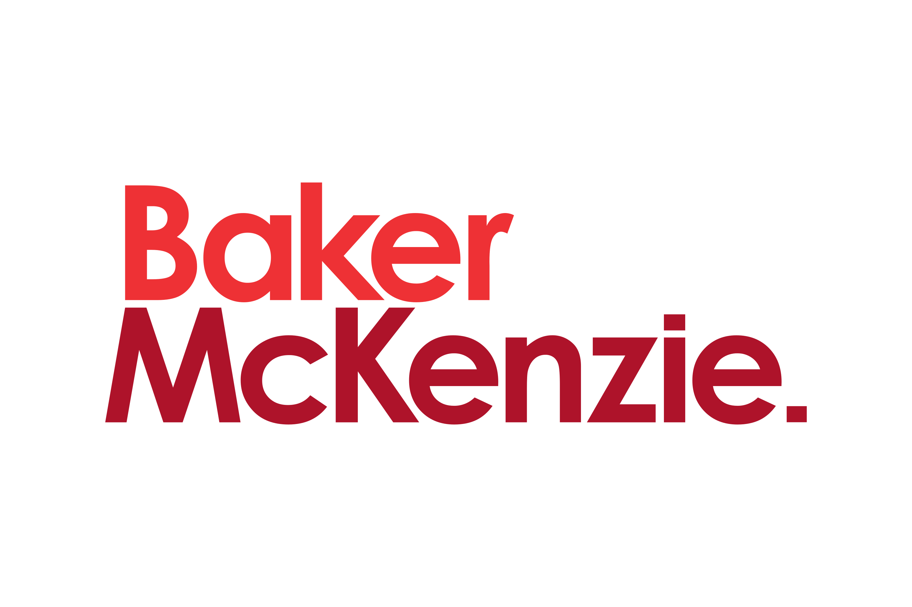
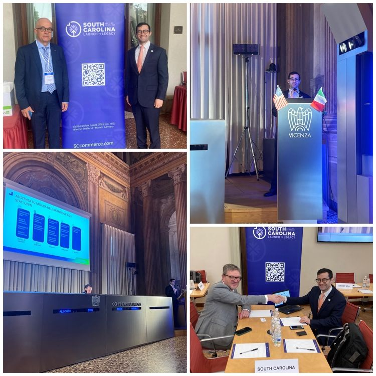
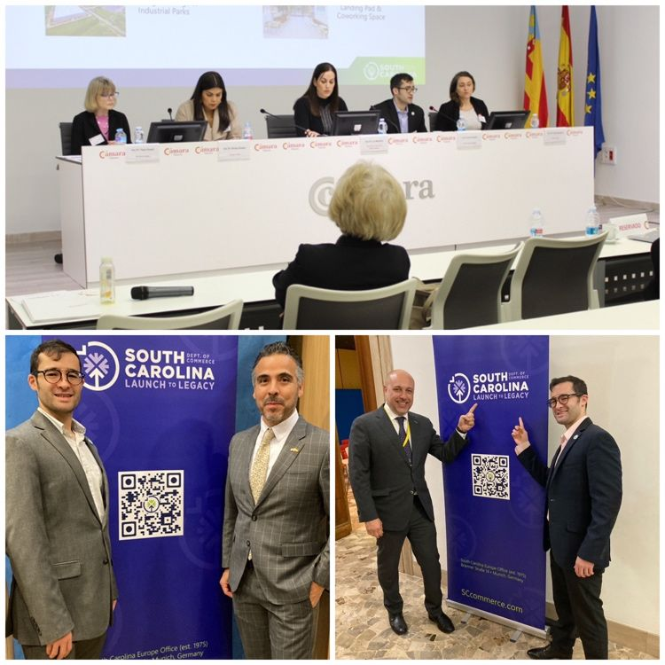
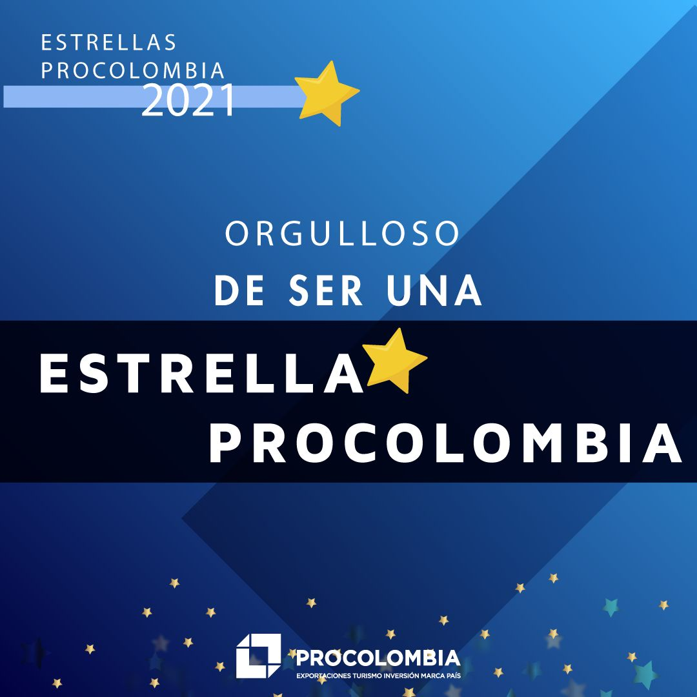
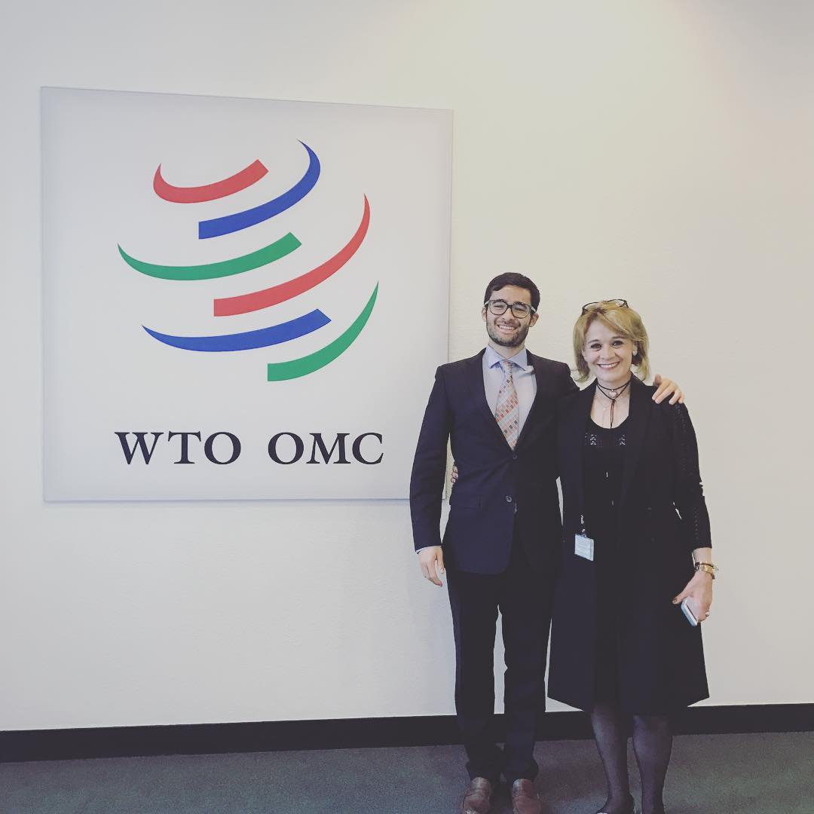
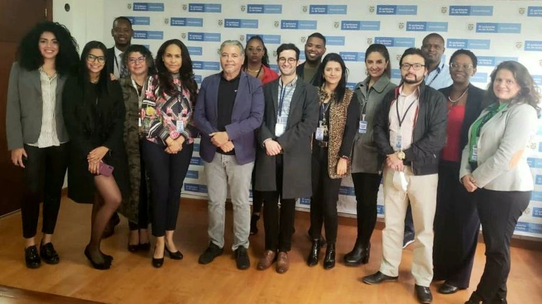

About me
- 🌍 Dual citizen: Colombia & Germany
- 👤 Single, no children
- 🚗 Driving license: Colombia & Germany
- ✈️ Experience in the World Trade Organization, across Europe & Latin America
- 🗣 Multilingual: 🇬🇧 EN · 🇪🇸 ES · 🇩🇪 DE · 🇫🇷 FR · 🇮🇹 IT
Professional Profile
Investment and Trade Strategist | Data Scientist specialized in investment attraction, international trade, and economic diplomacy. Experience in the World Trade Organization and across Europe and Latin America generating investment pipelines exceeding USD 400M through institutional engagement and data intelligence.
My results in brief
$423M+
Capital attracted
1,286
Jobs supported
+52%
Export growth impact
€1M+
Cooperation projects implemented
Software & Data Skills
Python
Power BI
Tableau
GitHub
TensorFlow
Scikit-learn
SQL
Deepnote
Cookiecutter
Jupyter
Looker Studio
Salesforce
Pandas
Excel
Collaboratory
International Footprint

Portfolio & Certifications
{kind=link}
Professional Experience

Publications
Marcas en el capítulo de Propiedad Intelectual del TPP
Read articleAmérica Latina: Destino de Inversión en el 2015
Read articleProfessional Associations
Professional Moments




